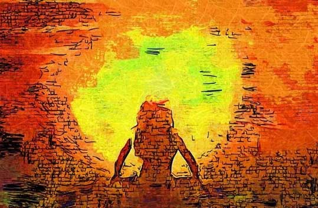

你的审美性格画像：小太阳
敏锐而富有进取精神，是圈子里的正能量担当，你的存在就改变了整个气场。

敏锐而富有进取精神，是圈子里的正能量担当，你的存在就改变了整个气场。
那些布局中心感明显、调子明快大气的艺术最适合你，因为现实中你的舒适区也在环境的中心，而且要舒展而自由地待在那里。
美学性格和人一样明朗直快。没有浪漫而明快甚至炫目的过程和形式的话，你是不屑一顾的。尤其是调子昏暗、形式晦涩、过程暧昧，那就可以直接上审美的黑名单了。
你的美学天敌还包括秩序、体系和那种整齐划一的意识形态美学。
如果你是艺术从业者，可能最适合你的角色是一头破坏的野兽。
但你的敏锐偶尔有点矫情，进取心也难免失之于浮华。而情绪被放大时，你的审美也就像晴转阴，可能自己都意识不到、却忽视了很多原本完全可以发现的美。因此，需要警惕这种偶尔短路。
他以使用鲜明、大胆的色彩而著名，野兽派创始人和主要代表人物。
*请注意，审美性格无优劣高低，本测试旨在帮助用户认识自己，从而能在特定场景做出更有效率的选择。